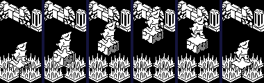
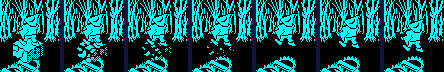
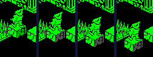
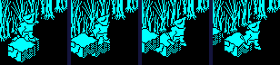
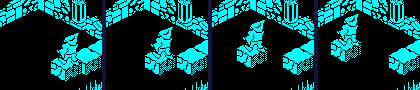
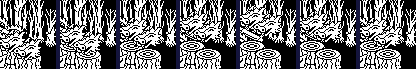

| Pentagram | How things move and collide |
Everything in a Pentagram room moves the same way: its update routine sets a step in U, V and Z (+$09 to +$0B), the collision code cuts the step down to what fits, and what is left is added to the position. The collision code is Knight Lore's -- its page works through it -- with more done where two things meet in Z. This page is about that, and about the Pentagram things built on it: lifts, conveyors, blocks that crumble or sink, pacers and bobbing heads.
DEC_DZ_AND_UPDATE_UVZ takes one off the Z step, for gravity, and calls ADJ_FOR_OUT_OF_BOUNDS, which takes the three axes one at a time -- Z, then U, then V -- each against the floor or the walls and then against every other record (ADJ_DZ_FOR_OBJ_INTERSECT, ADJ_DU_FOR_OBJ_INTERSECT, ADJ_DV_FOR_OBJ_INTERSECT): where the box after the step would overlap another, the step is shortened a unit at a time until it does not. Each axis is tried with the steps already accepted, so a move blocked along one axis keeps the part along the others: walking diagonally into a wall slides along it. A stopped axis sets a bit of +$0C (0 U, 1 V, 2 Z; bit 2 on a move down is standing on something). A box is centred in U and V, with half-sizes at +$04 and +$05, and in Z runs up from +$03 by +$06; touching is not overlapping. The walls are the room's half-sizes about 128 (ROOM_SIZES, copied to ROOM_EXTENT), and the floor is at 128 in every room; there is no ceiling. Where two things meet, harm passes both ways: +$0D bit 7 kills what the thing moves into, bit 5 what touches it, and bit 6 is being killed. A thing whose flags have bit 2 set is pushable: the mover's whole intended step is given to it, and it moves off in its own update.
The player's legs come in differently: MOVE_PLAYER takes 2 off his Z step (1 while he rises with jump held), cuts it with the same ADJ_FOR_OUT_OF_BOUNDS and adds it. His body is kept out of every test (bit 1 of its flags): the legs' box, 23 high, is the whole player.
Knight Lore's Z test only stops the step. Pentagram's (ADJ_DZ_FOR_OBJ_INTERSECT) does four more things when the mover meets something above or below it:
Each row is ADJ_FOR_OUT_OF_BOUNDS run in a simulator when this page was built, on a mover in record 0 and the other objects from record 6 in an otherwise empty set of records, in a room 64 either way from its middle. Steps are (U, V, Z). The player's step already has his fall taken off it.
| Situation | Step asked | Step allowed | And |
|---|---|---|---|
| Walking diagonally into a block | (3, 3, -2) | (0, 3, 0) | stopped in U, Z (+$0C bits 0, 2) |
| Walking into the wall at U 192 (a room 64 either way) | (3, 0, -2) | (1, 0, 0) | stopped in U, Z (+$0C bits 0, 2) |
| Falling onto a block from 3 above it | (0, 0, -5) | (0, 0, -3) | stopped in Z (+$0C bit 2); the block: its step becomes (0, 0, -5), +$0D bit 3, +$17 bit 7 |
| Walking into a block that can be pushed (its flags' bit 2) | (3, 0, -2) | (0, 0, 0) | stopped in U, Z (+$0C bits 0, 2); the block: its step becomes (3, 0, 0) |
| Standing on a block moving 2 a turn in U, as a pacing block does | (0, 0, -2) | (2, 0, 0) | stopped in Z (+$0C bit 2); the block: its step becomes (2, 0, -2), +$0D bit 3, +$17 bit 7 |
| Standing on a conveyor, graphic 140, on an odd turn | (0, 0, -2) | (2, 0, 0) | stopped in Z (+$0C bit 2); the conveyor: its step becomes (0, 0, -2), +$0D bit 3, +$17 bit 7 |
| The same on an even turn | (0, 0, -2) | (0, 0, 0) | stopped in Z (+$0C bit 2); the conveyor: its step becomes (0, 0, -2), +$0D bit 3, +$17 bit 7 |
| Standing on a conveyor, graphic 142, on an odd turn | (0, 0, -2) | (0, 2, 0) | stopped in Z (+$0C bit 2); the conveyor: its step becomes (0, 0, -2), +$0D bit 3, +$17 bit 7 |
| Landing on a crumbling block | (0, 0, -2) | (0, 0, -1) | stopped in Z (+$0C bit 2); the block: its step becomes (0, 0, -2), +$0D bit 3, +$17 bit 7 |
| The heavy block, graphic 91, landing on a crumbling block | (0, 0, -2) | (0, 0, -1) | stopped in Z (+$0C bit 2); the block: its step becomes (0, 0, -2), +$0D bit 3, +$17 bit 7 |
| A block with no bit 2 landing on a crumbling block | (0, 0, -2) | (0, 0, -1) | stopped in Z (+$0C bit 2); the block: +$0D bit 3 |
| Walking into a deadly head (+$0D = $A0) | (3, 0, -2) | (0, 0, 0) | stopped in U, Z (+$0C bits 0, 2); the mover is killed (+$0D bit 6) |
| A deadly head walking into him | (-3, 0, -1) | (0, 0, 0) | stopped in U, Z (+$0C bits 0, 2); the player: its step becomes (-3, 0, 0), killed |
The update routines behind Pentagram's moving scenery, by the graphics that UPDATES gives them and the rooms that place them (read from the room data when this page was built). The creatures -- spiders, the things from the sky -- are on their own page.
| Routine | Graphics | What it does | Where |
|---|---|---|---|
| PUSHABLE | 63, 72, 79 | Falls one unit a turn; a push moves it for that turn. The common tail of many others: moved at all, clear the steps and redraw; not, return without a redraw, so a thing at rest costs nothing to draw. | 23 rooms, from 3, 5, 9, 11, 13, 18, 22, 24, 29, 42, 55, 56 ... |
| SPIKES | 28 | The spikes: deadly both ways, otherwise as the pushable things. | rooms 8, 14, 19, 41, 76, 103, 111 |
| HEAVY_BLOCK | 73, 91 | The heavy block (91): its sideways steps are cleared before it moves, so pushes are lost and it only falls. With the player, the only thing that marks what it lands on (+$17 bit 7). The table (73) enters at SLIDING_TABLE and keeps a push. | rooms 16, 19, 41, 73, 91, 142, 146 |
| SINKING_BLOCK | 78 | Sinks one unit a turn while it is stood on: any Z step it is given becomes -1. | rooms 15, 80, 86, 123, 146, 149 |
| LIFT | 84 | The lift: waits to be landed on, then rises carrying him. | rooms 2, 19, 54, 87, 94, 147, 149 |
| BOBBER | 85 | Bobs: falls, and on landing rises to Z 176, and falls again. | no room |
| DEADLY_BOBBER | 86 | The deadly head that bobs: deadly both ways, then as BOBBER. | rooms 11, 27, 42, 55, 62, 88, 107, 108 |
| DEADLY_PACER_U | 87, 92 | Paces along U, 2 units a turn, turning round when it bumps into anything; never falls. Graphic 92, a head, is deadly; 87, a block, enters at PACER_U, after the call that makes it deadly, and is not. | 19 rooms, from 2, 4, 15, 27, 29, 34, 38, 46, 47, 56, 59, 69 ... |
| DEADLY_PACER_V | 88, 93 | The same along V: 93, a deadly head; 88, a block (PACER_V). | rooms 0, 2, 6, 29, 46, 49, 59, 94, 129, 147 |
| CRUMBLING_BLOCK | 136-139 | Crumbles a stage for each turn it is stood on; after the fourth it vanishes. | 18 rooms, from 4, 15, 16, 27, 47, 54, 55, 62, 64, 69, 80, 87 ... |
| CONVEYOR_PLUS_U | 140 | Conveyor +U: clears +$0D bit 3 so it can push again next turn. The push itself is in the collision code (CONVEYOR_PUSH). | rooms 37, 129 |
| CONVEYOR_MINUS_U | 141 | Conveyor -U, the same code. | no room |
| CONVEYOR_PLUS_V | 142 | Conveyor +V, the same code. | rooms 37, 67, 108 |
| CONVEYOR_MINUS_V | 143 | Conveyor -V, the same code. | room 108 |
Each of these is a real room, entered by the game's own restart in a simulator when this page was built, with the player then put on top of the object by writing his position (both his records, just above it) and the game left to run a turn at a time. Nothing else was touched but his lives, topped up each turn.
| Situation | What happened |
|---|---|
| He stands on the lift (room 54) | it stays put until he is standing on it (his Z 140, the lift's top, on turn 5 here), and from the next turn rises one unit a turn with him 12 above it, from Z 128 to 176 at turn 54; then he drops and pushes it down with him, faster each turn (its Z: 176, 172, 171, 167, 162, 156, 149, 141, 132, 128), and at the floor, turn 63, it starts again |
| He stands on a crumbling block (room 4) | graphics 136, 137, 138, 139 from the turn he lands: a stage a turn, then gone, and he falls (his Z: 152, 152, 150, 146, 140) |
| He stands on a sinking block (room 15) | its Z: 152, 149, 145, 141, 137, 133, 129 at every fourth turn -- a unit a turn from the turn after he lands |
| He stands on a conveyor, graphic 140 (room 129) | his U: 88, 88, 90, 92, 94, 96, 98, 100, 102 at every other turn -- two units every other turn |
| He stands on a pacing block, graphic 87 (room 93) | its U: 182, 178, 174, 170, 166, 162, 158, 154, 150, 146, 142; his: 182, 180, 176, 172, 168, 164, 160, 156, 152, 148, 144 -- carried along with it, a turn behind |
| The deadly head (room 107), left alone | its Z, every fourth turn: 152, 156, 160, 164, 168, 172, 176, 172, 168, 164, 160, 156, 152 -- up a unit a turn to 176 and down again to 152, where it lands |

The lift in room 54, with him on it, at turns 7, 22, 37, 54, 58, 63: rising, at the top, falling with him, back at the floor.

The crumbling block in room 4, a turn each from the turn he lands.

The sinking block in room 15, at turns 1, 8, 16 and 24.

Standing on the conveyor (graphic 140) in room 129, at turns 1, 6, 11 and 16.

Riding the pacing block (graphic 87) in room 93, at turns 1, 7, 14 and 20.

The deadly head in room 107, every sixth turn, the player well away from it.